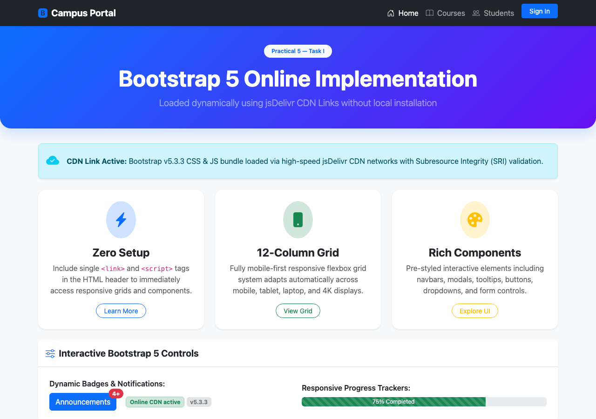
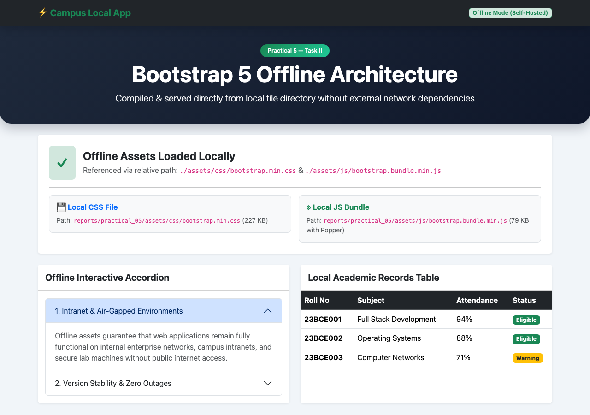
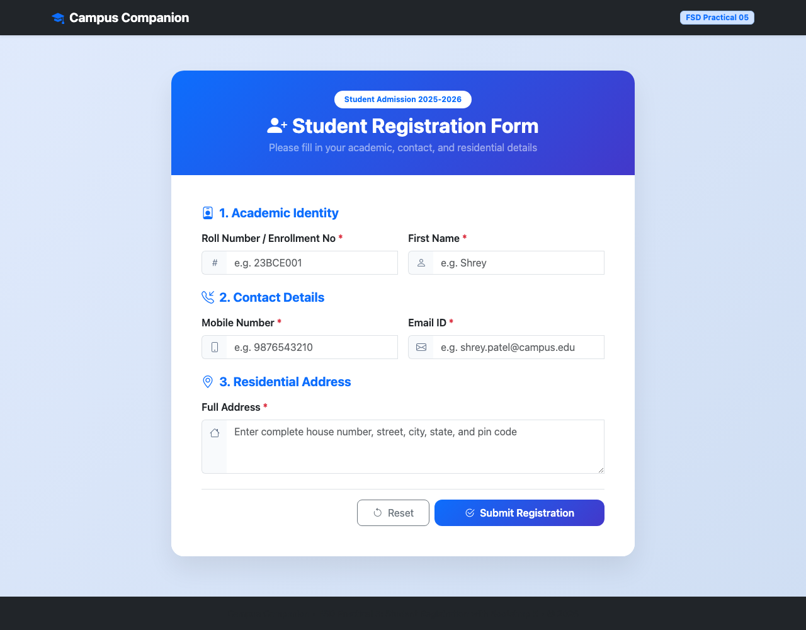

reports/practical_05/.
Online CDN (Content Delivery Network): Assets are delivered from geographically distributed edge servers (such as jsDelivr or Cloudflare). Provides fast global delivery, browser cache sharing across sites, and zero local disk footprint, with Subresource Integrity (SRI) for security.
Offline Local Integration: Assets (bootstrap.min.css and bootstrap.bundle.min.js) are hosted directly within the application directory. Crucial for intranet, lab environments, enterprise air-gapped networks, and environments requiring strict version immutability.
Bootstrap 5 provides semantic CSS form controls (.form-control, .form-label, .form-select, .input-group) alongside a pseudo-class based validation system. By adding novalidate and toggling .was-validated via JavaScript, form fields dynamically display green/red borders with .valid-feedback and .invalid-feedback hints.
File: reports/practical_05/task1_bootstrap_online.html
<!-- Bootstrap 5 CSS via jsDelivr CDN with SRI -->
<link href="https://cdn.jsdelivr.net/npm/bootstrap@5.3.3/dist/css/bootstrap.min.css"
rel="stylesheet"
integrity="sha384-QWTKZyjpPEjISv5WaRU9OFeRpok6YctnYmDr5pNlyT2bRjXh0JMhjY6hW+ALEwIH"
crossorigin="anonymous">
<!-- Bootstrap Icons CDN -->
<link rel="stylesheet" href="https://cdn.jsdelivr.net/npm/bootstrap-icons@1.11.3/font/bootstrap-icons.min.css">
<!-- Interactive 12-Column Responsive Grid Layout -->
<div class="container my-4">
<div class="row g-4">
<div class="col-md-4">
<div class="card h-100 shadow-sm">
<div class="card-body text-center">
<h4 class="card-title fw-bold">Zero Setup</h4>
<p class="card-text text-muted">Instant inclusion via remote CDN links.</p>
</div>
</div>
</div>
</div>
</div>
<!-- Bootstrap 5 JavaScript Bundle (Popper Included) -->
<script src="https://cdn.jsdelivr.net/npm/bootstrap@5.3.3/dist/js/bootstrap.bundle.min.js"
integrity="sha384-YvpcrYf0tY3lHB60NNkmXc5s9fDVZLESaAA55NDzOxhy9GkcIdslK1eN7N6jIeHz"
crossorigin="anonymous"></script>
File: reports/practical_05/task2_bootstrap_offline.html | Assets: reports/practical_05/assets/
<!-- Offline Local Bootstrap 5 CSS (Self-Hosted) -->
<link rel="stylesheet" href="./assets/css/bootstrap.min.css">
<!-- Offline Components: Accordions & Responsive Tables -->
<div class="accordion" id="offlineAccordion">
<div class="accordion-item">
<h2 class="accordion-header">
<button class="accordion-button" type="button" data-bs-toggle="collapse" data-bs-target="#collapseOne">
1. Intranet & Air-Gapped Environments
</button>
</h2>
<div id="collapseOne" class="accordion-collapse collapse show" data-bs-parent="#offlineAccordion">
<div class="accordion-body">
Offline assets guarantee full functionality without external internet connection.
</div>
</div>
</div>
</div>
<!-- Offline Local Bootstrap 5 JavaScript Bundle -->
<script src="./assets/js/bootstrap.bundle.min.js"></script>
File: reports/practical_05/task3_student_registration.html (Includes all mandatory criteria)
<!-- Page Title, Roll Number, First Name, Mobile Number, Email ID, Address -->
<div class="card card-custom">
<div class="form-header">
<h2 class="fw-bold mb-1">Student Registration Form</h2>
<p class="mb-0 text-white-50">Academic Admission Portal</p>
</div>
<div class="card-body p-4 p-md-5">
<form id="studentForm" novalidate>
<!-- Roll Number -->
<div class="col-md-6">
<label for="rollNumber" class="form-label">Roll Number / Enrollment No *</label>
<input type="text" class="form-control" id="rollNumber" placeholder="e.g. 23BCE001" required>
</div>
<!-- First Name -->
<div class="col-md-6">
<label for="firstName" class="form-label">First Name *</label>
<input type="text" class="form-control" id="firstName" placeholder="e.g. Shrey" required minlength="2">
</div>
<!-- Mobile Number -->
<div class="col-md-6">
<label for="mobileNumber" class="form-label">Mobile Number *</label>
<input type="tel" class="form-control" id="mobileNumber" placeholder="9876543210" pattern="^[6-9][0-9]{9}$" required>
</div>
<!-- Email ID -->
<div class="col-md-6">
<label for="emailId" class="form-label">Email ID *</label>
<input type="email" class="form-control" id="emailId" placeholder="shrey@campus.edu" required>
</div>
<!-- Residential Address -->
<div class="col-12">
<label for="address" class="form-label">Full Address *</label>
<textarea class="form-control" id="address" rows="3" placeholder="Street, City, State..." required></textarea>
</div>
<button type="submit" class="btn btn-primary">Submit Registration</button>
</form>
</div>
</div>
| Evaluation Parameter | Online Bootstrap (CDN) | Offline Bootstrap (Local Files) |
|---|---|---|
| Setup Complexity | Minimal (single <link> and <script>) |
Requires downloading and managing CSS/JS folders |
| Network Dependency | Requires active internet connectivity to load | Works completely offline & in air-gapped intranets |
| Caching & Latency | Edge CDN caching across global servers | Served directly from local server origin |
| Version Control | Controlled by URL version tag (e.g., v5.3.3) | Committed and locked in repository build |
All objectives of Practical 05 were successfully implemented, verified, and captured:
bootstrap.min.css and bootstrap.bundle.min.js locally, ensuring offline resilience.